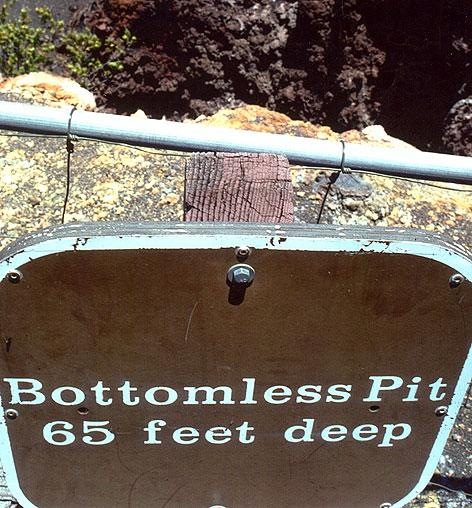

Wednesday, July the 2nd, 2008
back to: title, date or indexes
Attentive readers know that here at Hooting Yard we are always on the lookout for news about pits, be they bottomless pits, viper pits, pits of doom, or similar. So here is a thrilling article about a Pit of Death, which also features green slimy things and brine shrimp lethality tests!
Which reminds me that a correspondent recently sent in this photograph from the Telegraph:
